It’s time to into practice some of the skills that you have learnt so far.
Using GitHub desktop, you should create a new empty repo (like you did before)
The name of your repository should be: My-First-Code-Repo and the description should be “This is my first repo that includes code”
Publish the repo to GitHub.
If done correctly you should be able to open GitHub using GitHub desktop and see the following:
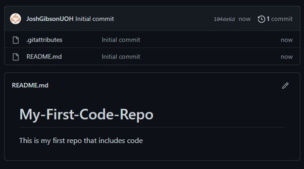As you have probably identified, out first repo that includes code, doesn’t *actually* include any code – so let’s add some!
Navigate to the repo that you cloned in the previous section, and within it you will once again see the two folders. We are going to take the “GitHub Console Project” folder from the GitHub-Lab1 you cloned previously and copy it into our locally created “My-First-Code-Repo”.
When completed your “My-First-Code-Repo” folder should look the same as the image below in file explorer
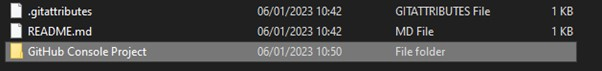Re-open GitHub desktop and you will be greeted with a whole host of new data, as the application has recognized that the folder has changed and has listed all the changes for you.
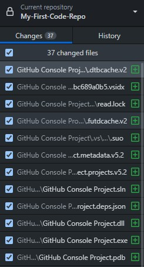These are all of the indiviual files that were present within our “GitHub Console Project” folder. Files that are new to your repo are represented with a green plus sign()
If these files have source code that can be viewed you can click on them and the UI will update showing what changes are going to be made. You can have a click through them all if you like but for the purpose of this demonstration we are going to scroll to the bottom of the list and view “Program.CS”.
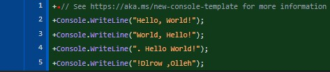New changes to the repo are highlighted in green. As we are adding a whole new folder to the project everything is highlighted in green – but this will change in the future!
Now we have added our program to our local repo we need to push it to our GitHub repository so that it is accesible from anywhere.
To do this we need to navigate to the bottom left hand corner and the boxes that say “summary and description”
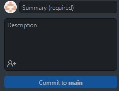In the summary box we are going to write an overview of what we have just added to our project, and in the description box provide a bit more detail.
Commits should clearly identify what was changed at a glance, and should be easily understandable to anyone who is accessing the project for the first time. This will not only help collberators on your project but also future you, you may be coming back to look at a project after time away.
In the Summary box we are going to write “Added GitHub Console Project To Repo”
And in the description “Moved the GitHub Console Project folder into the My-First-Code-Repo to view changes behaviour”
When completed your changes should look like the this:
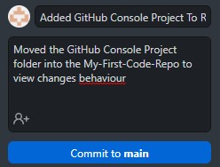When you are satisfied click the commit to main button and this will update GitHub desktop and tell it that locally this is our most up to date version of our project.
The changes will disappear from the UI (as they now aren’t changes, they’ve been committed to the project) and the UI will refresh and tell us that we have commits that are waiting to be committed to our origin file on GitHub – so let’s do this!
On the toolbar at the top of the window you will notice that the “Publish Repository” button that we used previously has been replaced with a “Push Origin” button ( ) that will push our changes to GitHub and make them accessible online.
Press the button and allow the GitHub desktop application to make the changes, when they are complete the “Push Origin” button will be replaced with one that says “Fetch Origin” when this happens you know the upload process has been completed.
Reopen the project in the browser and you should see the updated project with the GitHub console project file included. Like the image below.
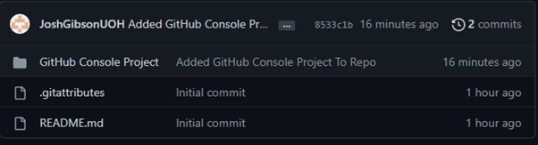If your repository looks the same you’ve committed your first changes to a GitHub repository!
In windows explorer navigate to your “My-First-Code-Repo” repository and open the “GitHub Console Project” solution in Visual Studio.
Edit the code so that instead of printing out the four versions of “Hello, World!” present one after the other it instead prints one of them at random, with a random foreground and background colour.
When you have got this process working you should then edit the code so that it repeats this process ten-thousand times, with a half of a second break between each print.
When you have completed this process, and your console output looks like this:
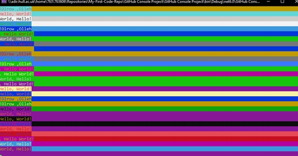Then save your changes and return to the GitHub desktop application.
You will notice that GitHub Desktop has automatically picked up the changes, and you are seeing some new symbols.
A red minus sign next to a change(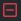)means that a file has been removed from a project. And an orange circle next to a change () means that a file has been edited.
Navigate again to “Program.cs” and depending on how you wrote your program you should see some changes.
Lines of code that are highlighted in red have been removed from the program.
Lines of code that are highlighted in green still represent items that are new to the program
Using the skills learnt previously commit your changes to your GitHub repository, make sure you use a clear and well-defined summary and description that show what changes you have made.
We have now made two changes to the same repository, and GitHub desktop makes it easy to look back over these.
From the main repo overview screen, alter the window that shows your changes to show change history by clicking the history button located at the top of the window.
If you have done this correctly it should look like the window below:
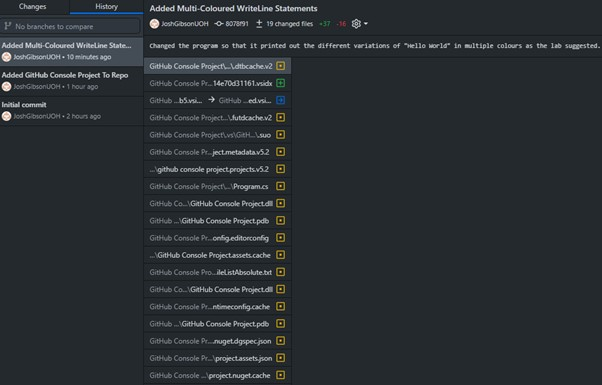As you may have noticed the commits are named using the summaries you used when committing them and the descriptions are visible at the top of each commit. This is one of the reasons that it is so important to ensure that these commits are named clearly and are easy to understand, imagine having to sort through 200 of these to find something specific and they are all named a variation of “commit #002”.
You may have also noticed that we have been introduced to a new symbol, a blue arrow ( ) this means that an item has been renamed.
If you’ve reached this point that means you can now add to, and track changes in a repo – well done!
Oh no! you’ve shown your boss your brand-new shiny Hello World program and it turns out they hate colour and want you to change it back to the original version.
Do not worry! We can do this using GitHub desktop.
From the history menu you accessed in the previous section navigate to your most recent commit, and right click on it, you will be greeted with a selection menu within it. Click “Revert changes in commit” to remove your changes.
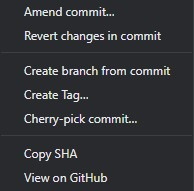After pressing this you will notice that a commit has been added to the history section that represents the removal of the commit you made earlier.
Also, the “Push Origin” button ( ) at the top of the screen is also once again available to be used.
Press the “Push Origin” button to make your changes to your GitHub repository.
Access the web version of GitHub as previously and you should see that the removal of the commit has now been completed. If you wish to double check this, you can navigate to the “Program.CS” by using the folder structure on the GitHub website to see if it is back to the original. It should look like the one below:
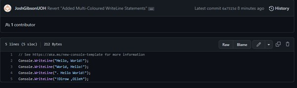Furthermore, your local version will also automatically update. Navigate to your repo folder and reopen your “GitHub Console Project” solution.
You should see that the code has reverted to its original solution, like below.
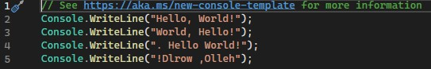But wait! Your boss has come back to you and informed you that the multi-colored “Hello World” was a success, and they want to use it going forward.
Using what you have learnt so far, see if there is a way that you can reverse the revert you have already done to get your code back – can it be done?
The answer is Yes! It can! In order to do this all you need to do is revert the revert, moving the program back to its initial state before you began this process. See if you can do this.